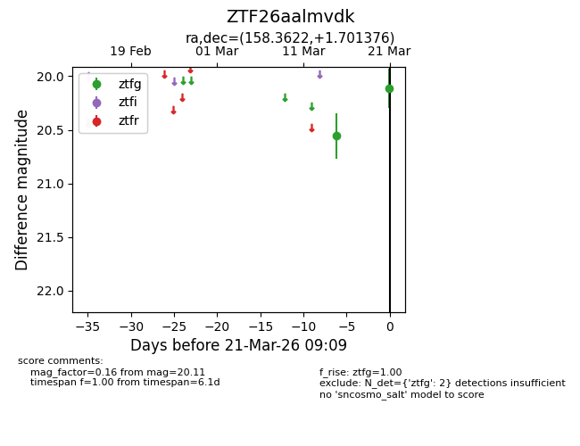
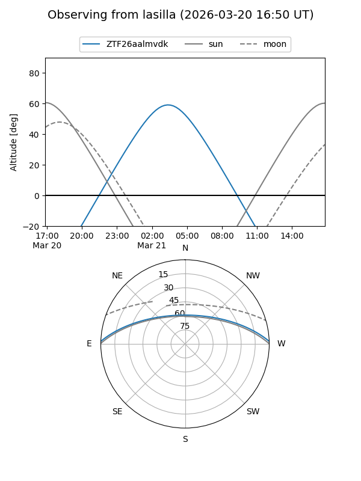
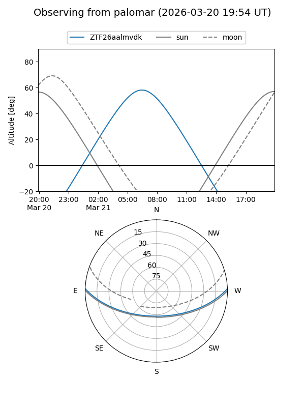
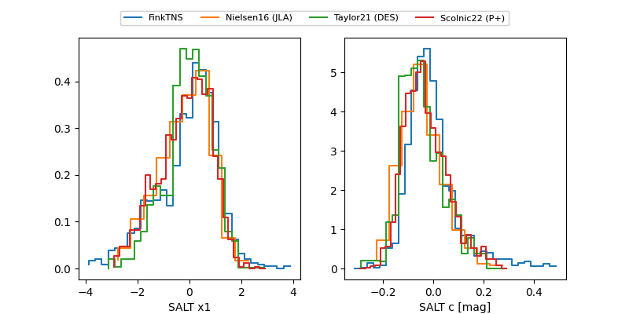

ZTF26aalmvdk
Target ZTF26aalmvdk at 2026-03-21 09:11
Aliases and brokers:
FINK: link
Lasair: link
ALeRCE: link
alt names
ZTF26aalmvdk (ztf,fink_ztf)
Coordinates:
equatorial (ra, dec) = 158.3622,+1.70138
equatorial (HMS+DMS) = 10:33:26.92,+01:42:04.96
galactic (l, b) = (244.6004,+48.30542)
Flags:
Photometry:
last ztfg=20.11
2 ztfg detections
Lightcurve

Visibility


Additional plots
